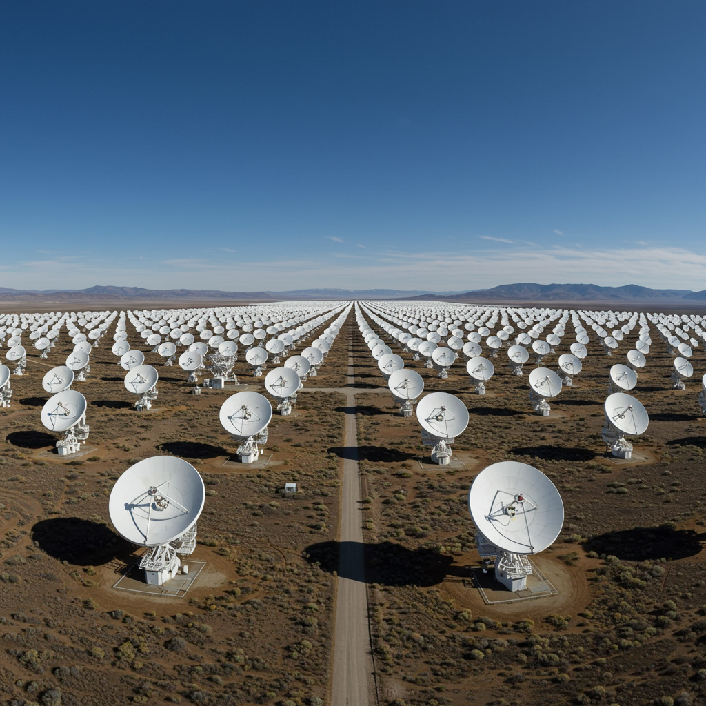

Allen Telescope Array
Ubicación: Hat Creek, California, Estados Unidos
Inicio de operaciones: 2007 (activo)
Tipo de instalación: Interferómetro de radiotelescopios
Objetivo
Realizar observaciones astronómicas en radiofrecuencias y búsqueda sistemática de señales de inteligencia extraterrestre (SETI).
Principales descubrimientos
- Estudios de formación de galaxias y estructuras cósmicas.
- Observaciones de nubes moleculares y regiones de formación estelar.
- Amplio trabajo de exploración de señales artificiales como parte del programa SETI.
Aportación histórica
El Allen Telescope Array (ATA) fue uno de los primeros radiotelescopios diseñados específicamente para exploración SETI en paralelo con estudios astronómicos tradicionales. Su arquitectura de matriz permite observar múltiples puntos del cielo al mismo tiempo. Ha impulsado el desarrollo de técnicas avanzadas de interferometría y análisis de datos.
Significado del nombre
El telescopio lleva el nombre de Paul Allen, cofundador de Microsoft, quien financió gran parte del proyecto. Su visión permitió crear un sistema dedicado a la exploración astronómica y la búsqueda de vida inteligente en el universo.
Estado actual
Activo con una parte de sus antenas operativas. Aunque ha tenido dificultades presupuestales, sigue siendo usado para observaciones SETI y radioastronomía tradicional, con planes para expandir o mejorar su capacidad.